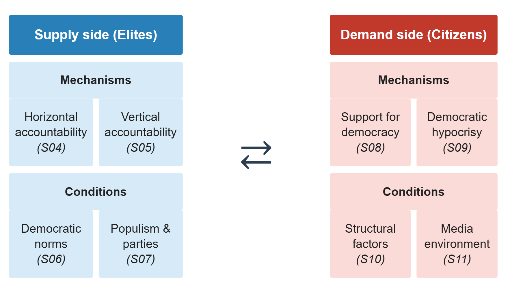
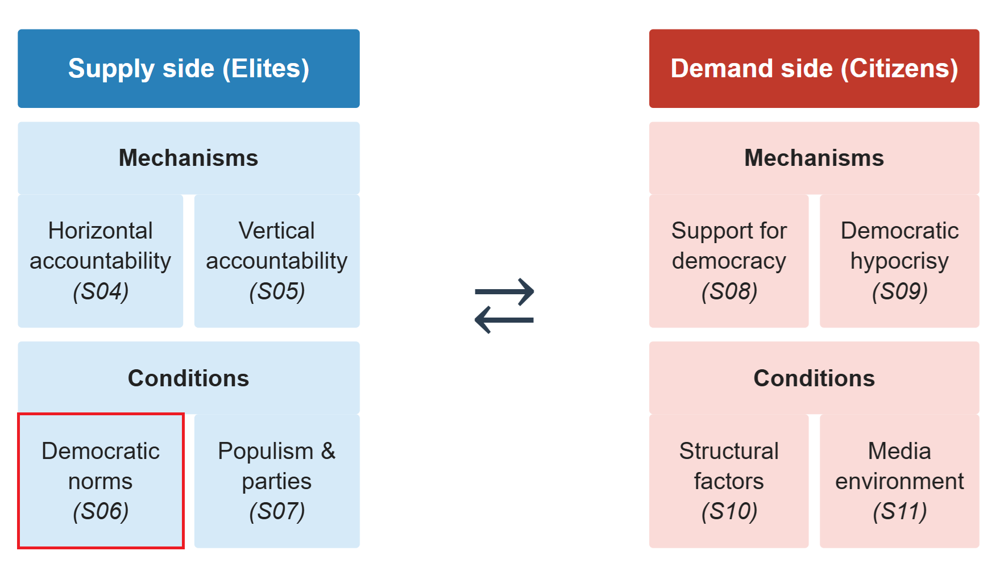

Weakening Democratic Norms
The Politics of Democratic Backsliding
Session 06
University of Lucerne
Introduction
Our analytical framework


This session’s goals
- Define social and democratic norms
- Explore how democratic norms may change and erode
- Discuss the implications of weakening democratic norms for democratic backsliding
- Students’ presentation: the case of India
Social norms
So far, focus on formal institutions: written rules and enforcement mechanisms
But political behaviour is also shaped by informal institutions: unwritten rules that shape patterns of behaviour
- Norms can be as constraining as formal rules – sometimes more so
- They operate through social sanctions: the threat of disapproval, ostracism, or reputational harm
Some of these informal institutions help sustain democratic politics
What are social norms?
Bicchieri, 2017
A social norm exists when individuals have:
- Empirical expectations: beliefs about what others do
- Normative expectations: beliefs about what others think one should do
- Expected social sanction: anticipated disapproval or punishment for deviation
Norms shape behaviour even when preferences differ: individuals conform to avoid sanctions
This can produce preference falsification (Kuran 1991): behaving differently from one’s true preferences to appear compliant
Democratic norms
Expectations of what people do and should do in democracies – and anticipation of a sanction if behaviour deviates
Incipient evidence on democratic norms
- Respect for election outcomes: differs from Przeworski’s rational calculus – opponents may accept results not only because it is in their interest, but simply because it is expected
- Protection of minority rights (anti-prejudice norm): citizens may publicly support it against their true preferences, simply because it is perceived as widely shared
But democratic norms also include many of the behaviours associated with accountability: independence of courts, parliamentary oversight, press freedom…
Social norm change
Norms change when individuals update beliefs about what others around them do and think
The pluralistic ignorance: most people privately reject a behaviour but believe others support it – so they keep conforming
When the true distribution of views becomes known, conformity collapses and the norm breaks
But a question remains: who are the first movers, and under what circumstances?
Weakening democratic norms
What do we know about democratic norms?
The argument about a democratic culture is old:
- Almond & Verba (1963): civic culture as a prerequisite for stable democracy
- Inglehart (1971): culture as a vehicle of modernization and democratization
- Easton (1975): diffuse support for the political system as a stabilizing force
Yet, the systematic empirical analysis of a democratic norms is recent; still a lot to be theorized and tested
The emerging idea: norms may be as important as institutions in sustaining – or undermining – democracy
Whether norm erosion enables institutional erosion or is reinforced by it remains an open question
From extreme to mainstream
Bursztyn, Egorov & Fiorin, 2020
Research question: can political shocks – like an election outcome – shift social norms?
Argument: elections aggregate private opinions publicly; when voters update beliefs about what others think, the stigma cost of expressing previously taboo views falls
Case: Donald Trump’s rise and 2016 victory in the US
Method: two revealed-preference experiments measuring willingness to publicly express xenophobic views, and willingness to sanction others for doing so
Findings: elections shift norms
Bursztyn, Egorov & Fiorin, 2020
- Trump’s electoral success increased willingness to publicly express xenophobic views
- Individuals who expressed such views in a high-Trump-support environment were sanctioned less negatively by others
Implication: norms can erode rapidly – not because private attitudes changed, but because the perceived social consensus shifted
Elite rhetoric and democratic norms
Clayton et al., 2021
Research question: can elite rhetoric undermine democratic norms among citizens?
Argument: elites can shift the perceived legitimacy of norm violations among their supporters, eroding the normative foundations of democratic stability
Case: Trump’s repeated attacks on the legitimacy of the 2020 US presidential election
Method: panel survey experiment – repeated exposure to Trump tweets attacking electoral legitimacy, measured over multiple waves
Findings: attitude change
Clayton et al., 2021
Exposure to Trump’s rhetoric erodes trust and confidence in elections and increases belief the election was rigged
- But only among Trump approvers – co-partisans, not the general population
- Effects do not extend to general support for democracy or support for political violence
Importantly, there is no direct evidence of norm shift, but of belief and attitude change
Yet, elite norm-violating rhetoric may normalize anti-democratic preferences with potential behavioral implications
Your responses
“People might not always be honest about supporting things like violence in a survey, even if their respect for democratic rules has actually started to fade.” (Jetesa Huskaj)
“the sample comes from Amazon Mechanical Turk […] the findings may not fully generalize to the broader American public, especially ones that are less online or more politically disengaged citizens.” (Moses Emmanuel Saba)
“the experimental design context is artificial, the participants saw tweets inside of a survey, […] . This can be addressed by examining more realistic information environments, including exposure to the rebuttals or even partisan media reinforcement.” (Moses Emmanuel Saba)
Beyond the US case?
What other cases of normalization of anti-democratic views or behaviour can you think of?
Some potential cases:
- Hungary: Orbán’s rejection of liberal democratic norms – making “illiberal democracy” a legitimate political position
- Germany: AfD’s mainstreaming of anti-immigration stances previously confined to the political fringe
- Spain & Portugal: Vox and Chega normalizing positive references to the authoritarian past
In each case: formal institutions intact, previously unaccepted views now publicly expressed
Beyond extreme candidates: mainstream parties
Valentim, Dinas & Ziblatt, 2025
Research question: how does anti-immigrant rhetoric by mainstream politicians affect norms of tolerance – compared to the same rhetoric by radical-right politicians?
Argument: mainstream politicians erode norms more than radical-right politicians, because they represent a larger share of the population and enjoy higher status as guardians of democratic norms
Case: near-identical anti-immigrant statements by real mainstream-right and radical-right politicians in Germany
Method: survey experiment manipulating the source of the statement while holding content constant
Findings: mainstream parties as norm erosion agents
Valentim, Dinas & Ziblatt, 2025
Mainstream-right politicians erode anti-prejudice norms more than radical-right politicians
- Radical-right statements generate backlash on the left – but this backlash disappears when similar statements come from mainstream politicians
- Effect is strongest among left-wing individuals – who are most sensitive to who is crossing the normative line
Implication: when mainstream parties accommodate radical-right rhetoric, they do not neutralize it – they amplify its norm-eroding effect
A norms-based theory of political supply and demand
Valentim, 2024
Puzzle: radical-right behaviour increases rapidly – but underlying attitudes do not change that fast
Argument: social norms suppress the public expression of privately held radical-right views – preference falsification
- Voters with radical-right views do not act on them because they think those views are socially unacceptable
- Politicians underestimate latent demand → recruit less skilled leaders → fail to mobilize even sympathetic voters
The normalization process
Valentim, 2024
Phase 1 – Latency equilibrium: radical-right preferences exist but are suppressed; norm against expressing them is strong; radical-right politicians are unskilled and fail to mobilize
Phase 2 – Activation stage: an exogenous shock signals that the norm is weaker than believed; some voters begin expressing views publicly; more skilled politicians enter
Phase 3 – Surfacing equilibrium: expressing radical-right views becomes socially acceptable; the norm has shifted; a new, lower-norm equilibrium is stable
What triggers normalization?
Valentim, 2024
Normalization follows a sequential process, not a single cause:
- Exogenous shock – a crisis or event loosens the norm temporarily, making preference falsification briefly visible (e.g. terrorist attacks, economic crises)
- Political entrepreneur – a skilled politician recognizes the latent demand and acts as first mover, mobilizing previously silent views electorally
- Electoral breakthrough – success signals to voters that a critical mass of like-minded others exists; public expression of radical-right views surges
Each step is necessary but not sufficient: the shock alone fades; without an entrepreneur, latent demand stays silent; without electoral success, the norm rebounds
Supply and demand of norms
Valentim, 2024
Demand side
Voters update beliefs about social consensus
↓
Stigma cost of expressing views falls
↓
More public expression of radical-right preferences
Supply side
Politicians observe latent demand becoming visible
↓
Incentive to run on radical-right platform grows
↓
More skilled candidates enter; electoral success follows
The two sides reinforce each other: electoral success further normalizes views, impelling more politicians to join
Conclusion
Democratic norms and backsliding
What do we know about democratic norms and their erosion?
How does norm erosion relate to the weakening of accountability mechanisms we studied?
How does norm erosion relate to backsliding more generally?
Summary
- Social norms shape behaviour through empirical and normative expectations and the threat of social sanctions
- Democratic norms define what is deemed acceptable in democracies, interacting with formal rules in sustaining the democratic process – although empirical evidence remains limited
- Norms can erode rapidly when the perceived social consensus shifts: elections, crises, and elite rhetoric can all act as triggering shocks
- Weakened democratic norms mean anti-democratic behaviour becomes normalized and goes unsanctioned, potentially sustaining backsliding

Next session (15:45)
Session 07: Populism and the Weakening of ‘Party Democracy’
Case study: United States
Before…
Presentation by Lina:
India
Thanks! 🙂

Hauptseminar - Spring Term 2026
Social and democratic norms